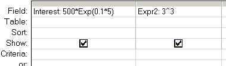

Exponential e raised to the nth power.
Syntax
Exp (number)
Key
number The power to raise e to.
The Exp() function can be used in VBA or in an SQL query.
To raise a number N to any power P, use the operator ^, so N^P

Example
Calculate continually compounding interest on $500 at 10% for 5 years:
Dim dblDemo As Double
dblDemo = 500 Exp(0.1*5)
In practice most accounts pay interest yearly or monthly rather than continually.
So $500 at 10% for 5 years would be:
Dim dblDemo As Double
dblDemo = 500 * 1.1^5
“The most important thing in an argument, next to being right, is to leave an escape hatch for your opponent, so that he can gracefully swing over to your side without too much apparent loss of face” ~ Sydney J. Harris
Related:
Log - Return the natural logarithm of a number.